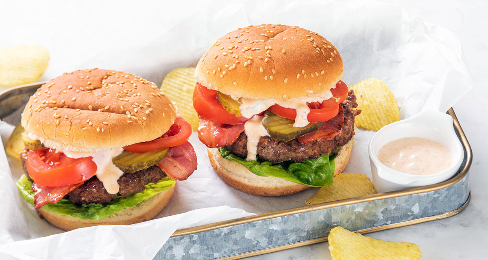

Hamburgers

Description
Recipe for handmade hamburgers, with delicious toppings such as bacon, tomato and pickles.
Even better with the included hamburger sauce recipe!
Serving size of 4
Ingredients
- 500 gr ground beef
- 1 egg
- 4 tablespoons of bread-crumbs
- Pinch of paprika powder
- Pinch of garlic powder
- Pinch of salt and pepper
- 1 tablespoon of butter or margarine (to cook in)
- 4 hamburger buns
Toppings
- 8 lettuce leaves
- 8 slices of bacon
- 2 tomatoes
- 12 pickle slices
Hamburger sauce
- 6 tablespoons of mayonnaise
- 1 tablespoon of vinegar
- Pinch of paprika powder
- 1 tablespoon of mustard
- 1 tablespoon of sugar
- 1 tablespoon of finely diced shallots
Preparation
- Start by frying the bacon in a skillet.
- Mix the minced meat with the egg, breadcrumbs and spices.
- Shape the mixture into 4 burgers. Press it well into a solid shape.
- Mix the ingredients for the sauce in a bowl.
- Cut the tomato in slices.
- Heat the margarine or butter in the same skillet as the bacon and sear the burgers 3 minutes on high and 5 minutes on low to ensure cooking throughout.
- Cut the buns in half. Toast them lightly in a skillet for 3 minutes. (if preferred)
- Top the buns with 2 leaves of lettuce, then the burger, slices of fried bacon, tomato and pickles. Finally, spoon some of the hamburger sauce on top.
- Enjoy!